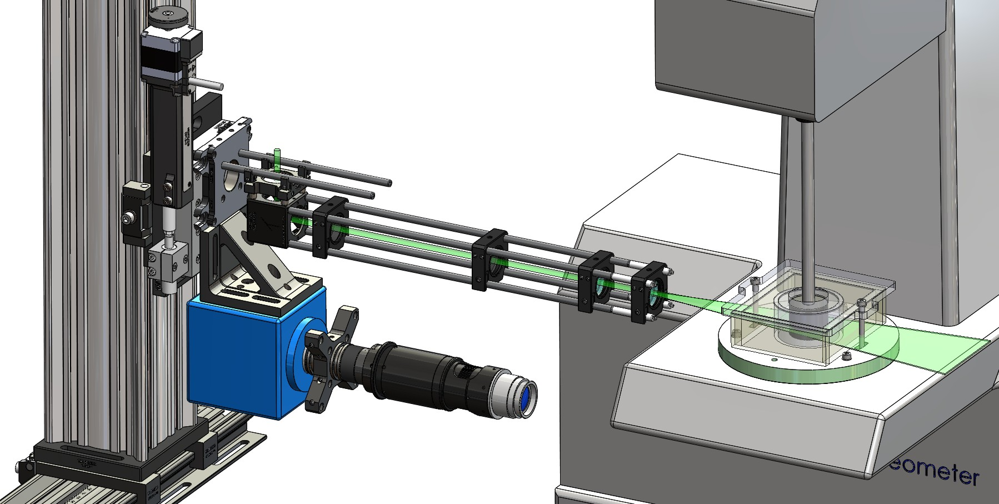

Precision Scanning PIV for Confined Three-Dimensional Flows
Planar particle image velocimetry (PIV) measures two velocity components within a single illuminated plane. This provides detailed information about local flow structure but cannot, by itself, reveal how the velocity field changes across neighbouring planes. I developed an automated scanning PIV platform to acquire measurements at precisely controlled spatial positions while preserving the optical alignment among the laser sheet, camera, and test section.
The optical and imaging components are mounted as a coordinated assembly on a motorised translation system driven by a Thorlabs LNR502-series linear stage. Rather than adjusting the camera and illumination independently for each measurement location, the complete assembly moves together. This maintains the relative position of the camera, imaging plane, laser-sheet focus, and field of view throughout the scan.

Engineering Challenge
Scanning a flow field requires more than translating a laser sheet. If the illumination and camera are repositioned independently, small alignment errors change the measurement plane, focus, magnification, and calibration between scans. I designed the camera and laser-sheet optics as a coordinated translating assembly so their relative alignment remains fixed while the measurement plane is moved through the flow.
Measurement Principle
Tracer particles within the working fluid are illuminated by a laser sheet approximately 0.5 mm thick. A double-frame camera records particle displacements within the illuminated plane, from which two in-plane velocity components can be calculated. The motorised stage then moves the complete optical assembly by a prescribed increment, enabling the process to be repeated across a sequence of spatially registered planes.
A high-quality 45° mirror beneath the test section redirects images of the radial-azimuthal plane to the camera. Sequential measurements at controlled axial positions map how the in-plane velocity field varies along the height of the confined Taylor–Couette cell.
Key Design Features
- Coordinated optical translation: Camera, laser-sheet optics, and mounting structure move together to preserve alignment across scan positions.
- Precision motorised positioning: Thorlabs LNR502-series linear stage provides repeatable, position-controlled travel.
- Scanning-plane registration: Prescribed stage increments associate velocity fields with known spatial locations.
- Thin laser-sheet generation: Bi-concave, bi-convex, and cylindrical lenses shape the beam into an ~0.5 mm measurement sheet.
- Under-cell imaging arrangement: 45° front-surface mirror redirects the radial-azimuthal plane to a horizontal camera.
- Wavelength-selective imaging: Green bandpass optical filter suppresses ambient light and stray reflections.
- Laser safety & containment: Enclosed with laser-rated black fabric and an anodised beam-trap termination plate.
Optical Design & System Architecture
Generating a Thin and Spatially Stable Laser Sheet
The raw laser beam must be expanded in one direction while remaining tightly focused in the orthogonal direction. I designed the optical train using spherical and cylindrical lenses to control the beam independently along the two axes. Bi-concave and bi-convex elements condition the incoming beam, while cylindrical lenses transform it into a sheet. Adjusting focal lengths and separation distances reduced the sheet thickness to approximately 0.5 mm at the measurement region, improving plane definition, reducing out-of-plane particle illumination, and minimizing depth-averaging errors.
Coordinated Scanning & Under-Cell Optical Path
Mounting the camera and illumination train on the same motorized translation framework preserves camera-to-sheet alignment, focal-plane position, magnification, viewing angle, and optical working distance throughout the scan.
Direct placement of the camera beneath the Taylor–Couette cell was constrained by the rheometer and fluid enclosure. I incorporated a high-quality 45° mirror beneath the test section to redirect the vertical viewing path by 90°, allowing the camera to remain horizontally mounted while imaging the radial-azimuthal plane above it without interfering with the rotating drive.
Optical Filtering & Laser Containment
A green bandpass optical filter mounted on the camera transmits the tracer scattering while rejecting ambient laboratory lighting. For safety and optical contrast, the measurement region is enclosed in laser-rated black fabric on a rigid aluminum frame, while a dark anodised metal plate intercepts the transmitted beam.
Project Context & Acknowledgements
Role & Location: Postdoctoral Research Associate, Department of Mechanical Engineering, University of Alberta, Edmonton, Canada.
My Contribution: Mechanical and optical design, laser sheet optics formulation, scanning stage automation, optical alignment protocols, and laser safety containment integration. The mechanical, optical, scanning, and laser-safety architecture was fully integrated as an experimental capability for multi-plane flow studies.
Related Engineering Projects & Hardware
Explore related optical flow measurement platforms, SolidWorks CAD repositories, and experimental hardware designs.